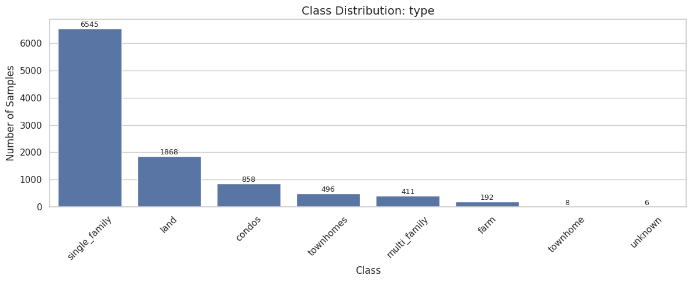
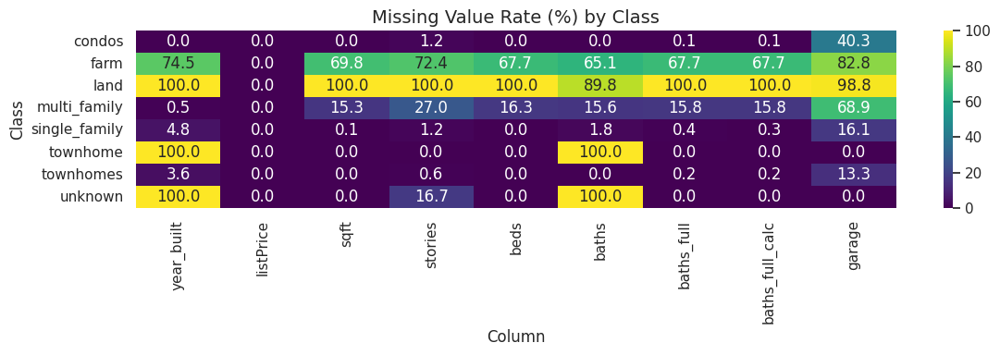
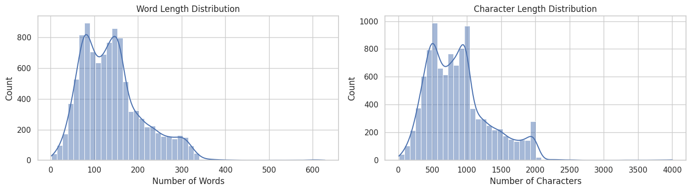

BTL 1: Phân loại Văn bản (NLP)
Khảo sát các RNN và mô hình phân loại chuỗi Transformer cho tác vụ phân loại văn bản y khoa / review.
1. Tiền xử lý văn bản (Text Processing)
Dữ liệu dạng text thường chứa nhiễu, URL, và stop words. Quá trình tiền xử lý bao gồm tokenization (BPE/WordPiece) và padding sequence để chuyển đổi câu thành ma trận tensor input.


2. LSTM vs Transformers (BERT)
Nghiên cứu đối chiếu khả năng xử lý ngữ cảnh dài của **LSTM hai chiều (BiLSTM)** đối với kiến trúc **Transformers (DistilBERT)**. DistilBERT nhanh chóng chứng minh ưu thế về khả năng attention toàn cục, cho chỉ số F1-Score vượt trên 10% đỉnh tại epoch 15 so với đường cơ sở LSTM.
